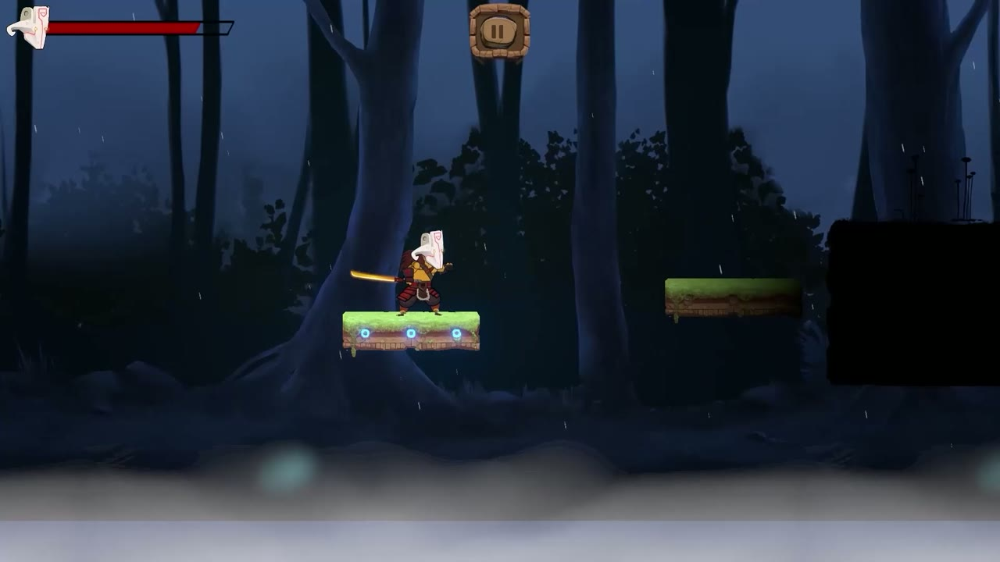
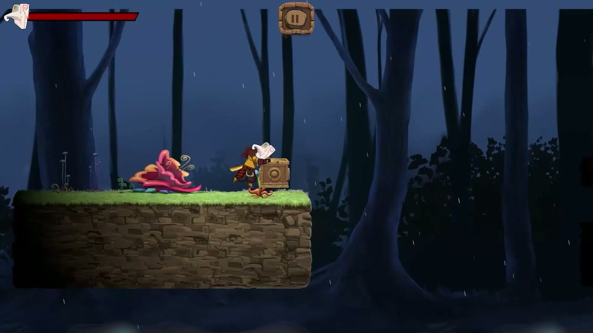
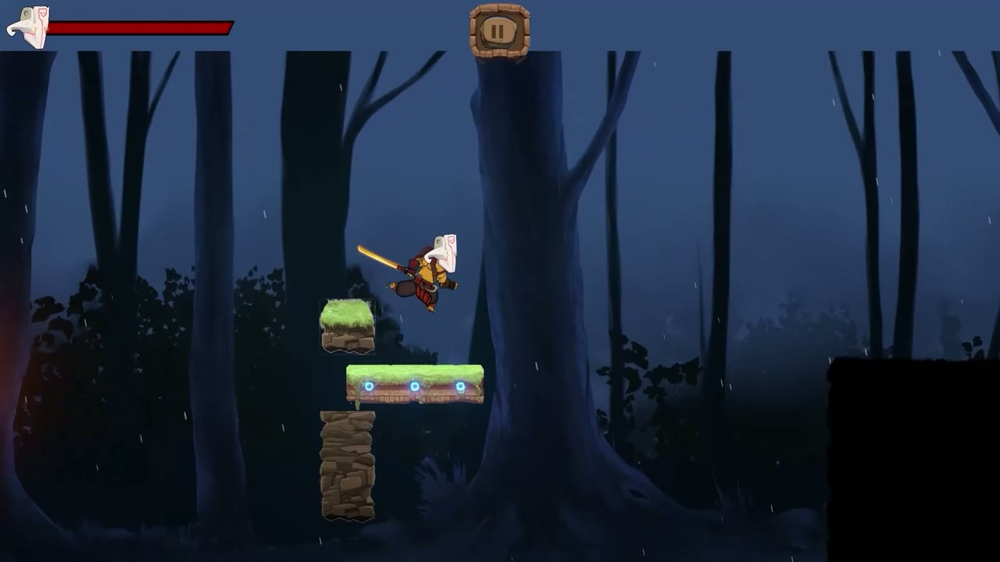
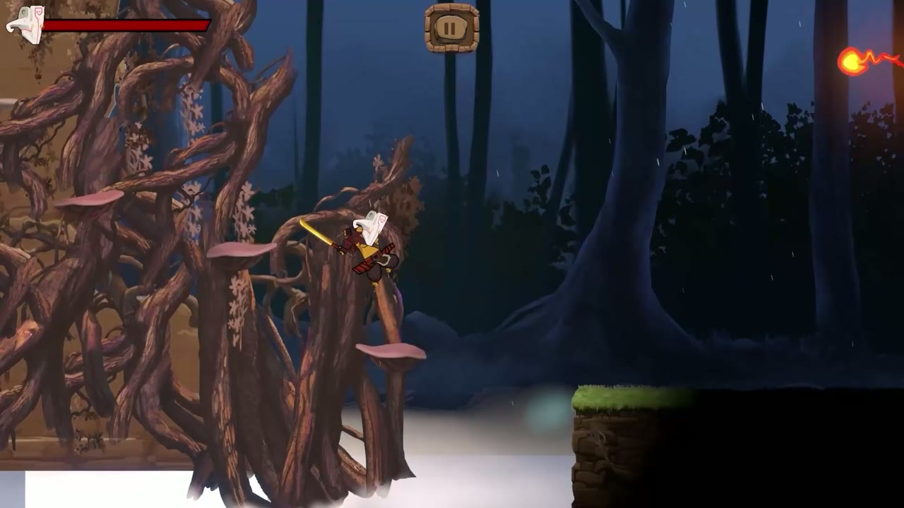

The Explorer
A hooded explorer, a jungle that never stops raining, and ledges that move under your feet while you're still deciding whether to jump.
Captured from the build. No commentary, no cuts — the level runs exactly as it plays.
01The idea
I built The Explorer to answer one question: how much tension can a 2D platformer get out of the environment alone? No cutscenes, no dialogue, no hand-holding. Just a jungle at night, rain coming down at an angle, and a traveller with a sword who has to get through it.
The answer turned out to be "quite a lot, if the floor stops being reliable." Everything in the level is built around that: ledges that drift, gaps you can't judge from where you're standing, and enemies placed exactly where you want to land.
02What's actually in the build
- A side-scrolling character controller with run, jump and air control tuned for short, deliberate hops rather than floaty platforming.
- Moving stone ledges marked with rotating indicators — you learn to read a platform's path before you trust it.
- A plant-type enemy that owns a specific stretch of the level, guarding a chest you have to earn.
- Health, a pause menu, and a restart loop that doesn't punish you into quitting.
- Layered night-jungle art with rain and a parallax backdrop, so the depth reads without a single UI marker.
- A boss encounter driven by custom AI instead of a scripted animation loop.
The boss was the part I cared most about. Scripted patterns are easy to learn and boring to beat, so I built its behaviour as a set of states that react to what the player is doing — which means the fight feels different the second time you play it.
03What broke first
Every project has a week that goes missing. Here are mine, and what I changed:
- Platforms vs. the controller. Standing on a moving ledge looked fine until the player also pressed a direction, and then the character started sliding off things that weren't moving at all. Resolving the platform's movement before reading input made both behave.
- Rain that cost frames. Atmospheric particles are the easiest way to make a scene feel expensive and the easiest way to lose your budget. Culling them to the camera view and thinning the emitter gave most of the look back.
- A boss that won by standing still. The first version punished movement so heavily that the safest strategy was to do nothing. Rebalancing the recovery windows made aggression the better answer again.
If the safest way to play your boss fight is to not play it, the boss is the problem.
04What I'd do next
- Two more enemy types that ask for different movement — one that punishes standing still, one that punishes running.
- A camera that frames each room deliberately instead of trailing the player.
- A full audio pass: footsteps on wet stone, rain that changes when you're under cover.
- Gamepad remapping and a real options screen before I'd hand this to a stranger.
05Frames



